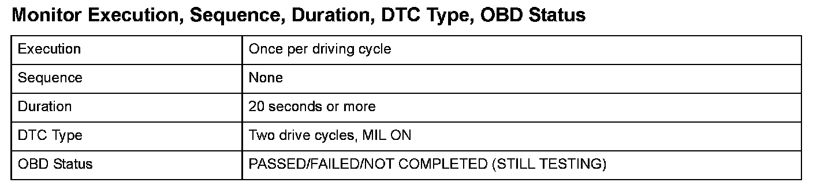

Advanced Diagnostics
DTC P0451: Fuel Tank Pressure (FTP) Sensor Circuit Range/Performance ProblemGeneral Description
The fuel tank pressure (FTP) sensor is installed on the evaporative emission (EVAP) canister. The FTP sensor is used to detect leaks in the EVAP system. The powertrain control module (PCM) monitors the FTP sensor output voltage. The FTP sensor output voltage rises as the fuel tank pressure increases. Conversely, the FTP sensor output voltage drops as the fuel tank pressure decreases. Rapid changes in the FTP sensor output voltage due to electrical noise or an intermittent open during the EVAP leak detection may cause incorrect leak detection, so abnormal output is monitored.
If the FTP sensor output voltage changes a specified number of times within a set time, the PCM detects a malfunction and stores a DTC.

Monitor Execution, Sequence, Duration, DTC Type, OBD Status
Enable Conditions
Malfunction Threshold
The FTP sensor output fluctuates by 0.3 kPa (0.1 in.Hg, 2 mmHg) or more at least five times within 3 seconds.
Driving Pattern
Start the engine in a cold condition, and let it idle for at least 20 seconds.
Diagnosis Details
Conditions for illuminating the MIL
When a malfunction is detected during the first drive cycle, a Temporary DTC is stored in the PCM memory. If the malfunction recurs during the next (second) drive cycle, the MIL comes on and the DTC and the freeze frame data are stored.
Conditions for clearing the MIL
The MIL will be cleared if the malfunction does not recur during three consecutive trips in which the diagnostic runs.
The MIL, the DTC, the Temporary DTC, and the freeze frame data can be cleared by using the scan tool Clear command or by disconnecting the battery.